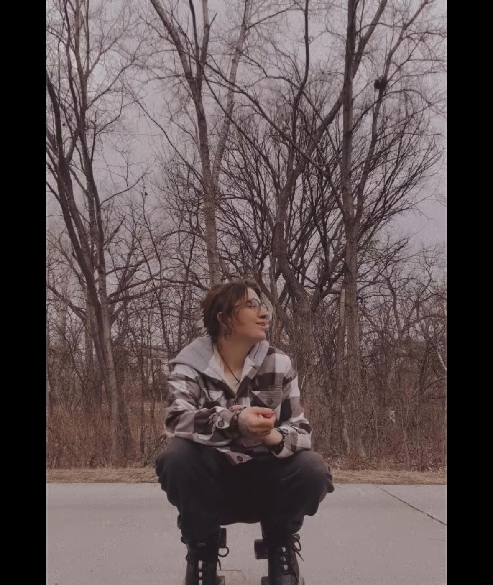
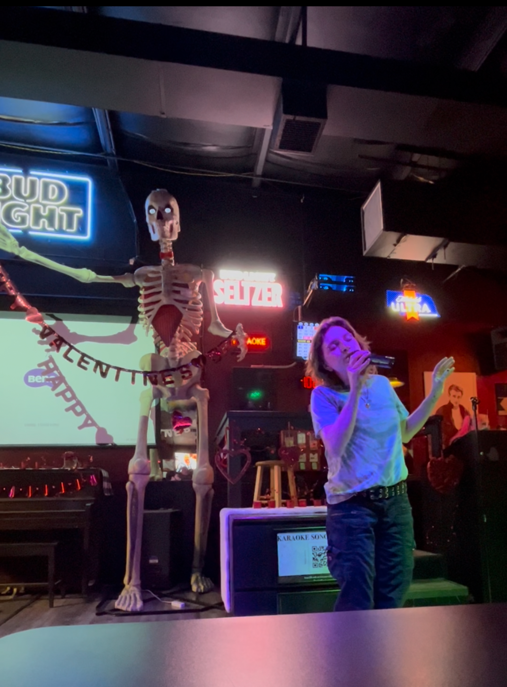

Roller Skating
Gliding on wheels, feeling the breeze, and moving freely—roller skating is Gabby’s way of unwinding and having fun. It’s not just about exercise, but about flow, energy, and joy.
Karaoke Nights
Music is a universal language, and Gabby loves singing her heart out during karaoke nights. Whether it's a power ballad or a fun duet, it’s all about **self-expression and letting go.**


Getting Lost in Books
From poetry to deep philosophy, reading opens new perspectives. Gabby enjoys curling up with a book, allowing her imagination to wander into new worlds and ideas.